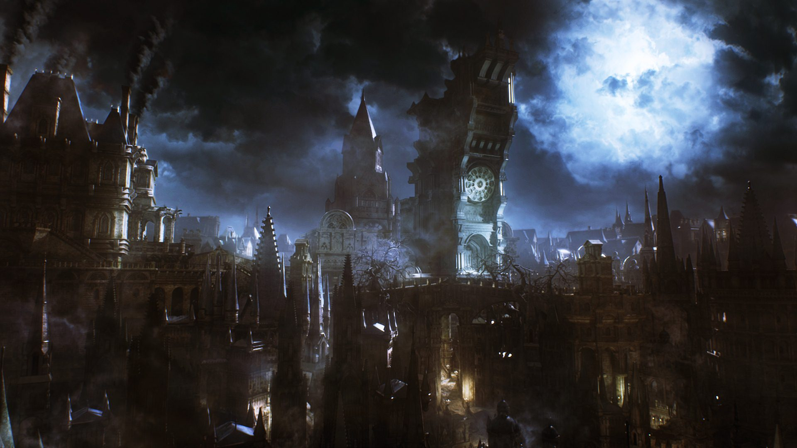
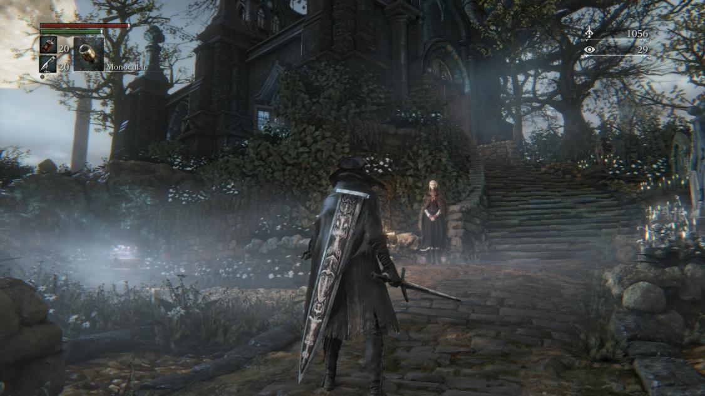

About Bloodborne
General Info
Bloodborne is an ARPG(Action Role Playing Game) developed by FROM SOFTWARE for PlayStation 4. You spend the time in the game as a "Hunter" while exploring the Victorian-inspired Yharnam, a city plagued by bloodborne disease that has turned a majority of the citizens into beasts. The game itself takes partial inspiration from H. P. Lovecraft and Bram Stoker, as well as taking some building designs from real life locations in Romania and the Czech Republic.
Bloodborne was incredibly well recieved both critcally and otherwise. It recieved praise for mostly every aspect of it; gameplay, sound design, atmopsphere, world design, plot, and so on. Often, Bloodborne is considered to be art in game form. Even though there were some technical difficulties at launch, the game soon ironed those out and now can almost be considered one of the greatest games in the past decade to be released. Bloodborne has sold over two million copies worldwide and has been nominated for a lot of awards. There has also been a comic book made of it and a card game.
Synopsis
Bloodborne takes place in Yharnam, a gothic city known for its use of blood ministrations in which the blood that is given cures those of any affliction they may have. it's speculated that this is the reason that the character that you play as has come to the city, though the reason is really up to the player. When the player awakes in the city after being treated with the blood, they come to find that it is plagued with beasts. You as the player must fight your way through the beasts to put an end to the nightmare that entraps the city, and maybe along the way you will discover why the city is the way it is.
Plot
The beginning of the game has you see through the eyes of your character while they are strapped to a bed in what appears to be a clinical ward. You are given a transfusion of blood by an old man who tells the player that everything they are about to experience will seem like a bad dream. Moments later your character falls unconcious and are granted the ability to create their character. Once the character is created you awake in the same room, old man gone, and begin your journey through Yharnam.
Should you die meeting your first enemy in the game you are transported to The Hunter's Dream which serves as the hub location for traveling around the game world. If you happen to survive your encounters you will eventualy come upon a lantern that allows you to travel to that same place. There are two NPCs in the Hunter's Dream, the Doll and Gehrman. The Doll serves as your character's source of power throughout the game as she allows your character to level up stats by trading Blood Echoes with her. Gehrman provides advice to the player and later becomes an essential part of the plot. Should you manage to make your way far enough into the game you will begin to find out why the city is in such a state of chaos. The worship of eldritch beings serves as the main plot point for most of the game.
Combat
Combat in Bloodborne is extremely fast-paced compared to previous entries, and has you attacking way more often rather than defending. There are points where you can get overrun by enemies if you choose to play defensively rather than attack and it can get crowded. You basically want to kill your enemey before they land a hit on you. If they do manage to land a hit, the game comes with a new system called Rally. Rally allows your character to keep attacking even while taking damage by returning a portion of your lost health to you on successful hits. In lore reasons for this is that the blood from your enemies fuels the beast blood in your character essentially making your character too angry to die if I may slide that meme in there. There is a New-Game Plus mode as is tradition in soulsborne games which allows you to restart the main game with your current equipment and level, at the cost of making the game harder(aka give enemies more health and damage).
The weapons in the game are designing speficially to fit the new fast combat mechanics by giving the player more variety in how they fight. Each weapon in the game is two weapons in one, they can switch almost instantly by combining with other parts that are visible on your character. One such transformation is where your character has the blade of a greatsword on their back, while in your main hand is a longsword. When you want to change to the secondary form of the weapon your charcter combines the two pieces to create a greatsword in one move. This can also be done while attacking and is pretty cool to look at, though not entirely practical in real life.